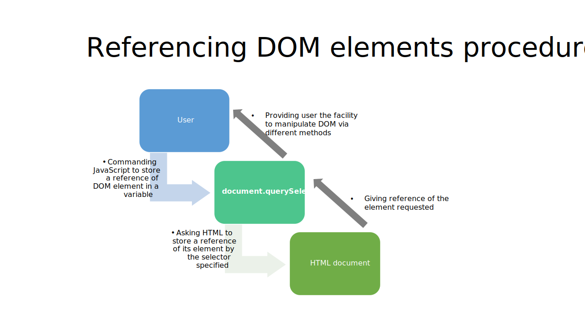

document.querySelector()
For the sake of analogy let’s suppose that you own a Multinational Company situated in India and you have a branch in Japan , you want to command the manager of that specific branch to make some changes in the office building but unfortunately you don’t know Japanese language so you hire a person who not only knows your language but also he has some knowledge of Japanese too and that person will eventually translate your commands into Japanese and the XYZ manager of the branch would execute the same
Here JavaScript is your multi-national company, elements of HTML is your branch and .querySelector() method is your bilingual employee
In simple words document.querySelector() selects an element from your HTML document and then it stores it's reference to a variable which ultimately facilitates you to manipulate DOM and add functionalities to it
Syntax
var your_var_name = document.querySelector(“selector”);